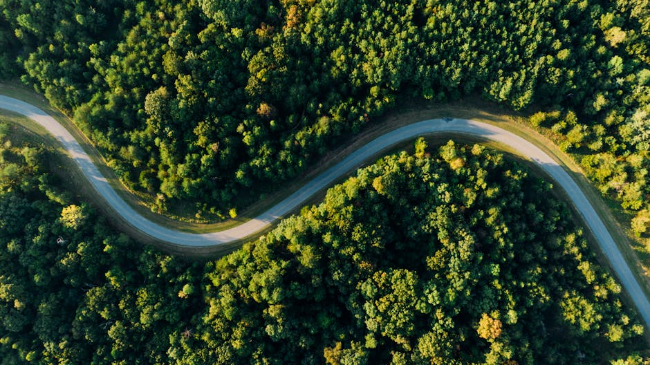

Monitoring the impact of palm oil monoculture, shrimp aquaculture & mining in continental Ecuador and the Galapagos using AI

The dataset can help to build systems, that can monitor the impact of palm oil monoculture, shrimp aquaculture, mining and other land transformations in continental Ecuador and Galapagos. The project created a 20.000 points land use/cover classification training dataset from existing data, with labels that can be used to train multi-spectral Earth observation (EO) data machine learning (ML) models covering continental Ecuador and the Galapagos islands.
Data characteristics
Two datasets available:
- BaseDatosValidacionFinal30052: This is the raw dataset containing 20,000 georeferenced points along with their respective land cover classifications.
- LULC Training Data for Ecuador ML: This dataset builds upon the first by incorporating additional information on the conservation status of each point. This includes whether the location falls within protected areas, indigenous territories, areas under government forest incentive programs, and other conservation-related designations.
Model characteristics
[Auto-enriched from linked project resources]
Land use and land cover (LULC) training dataset for Ecuador by MapBiomas Ecuador. Contains 20,000 georeferenced points with land cover classifications derived from visual interpretation of LANDSAT satellite imagery covering 1985 to 2023. An enhanced version adds conservation status information: protected area designations, indigenous territory boundaries, government forest incentive programs, and other conservation-related designations. Format: ZIP. Size: ~1.7 MB. License: CC BY 4.0.
Source: https://www.kaggle.com/datasets/mapbiomasecuador/lulc-training-data-for-ecuador-ml/data
How to use
This dataset will allow for a better understanding of land transformation dynamics taking place, such as forest conversion to palm oil monoculture, mangrove transformation to shrimp aquaculture, water bodies and estuarine vegetation impacted by mining, natural grasslands encroached upon by expanding forest plantation, and more. It also has the potential to identify recovery cases. For example, the Galapagos data might provide the ability to estimate if invasive species control programs have had a positive impact in vegetation regeneration or if governmental forest incentives are promoting deforestation reduction in the Ecuadorian Amazon. The land’s conservation status has the potential to predict risk of future transformation.
Datasets
About
Powered by / Provided by: Ecociencia
Catalyzed by: Lacuna-Fund / Meridian (Climate-call) & FAIR Forward - AI for All, GIZ
Financed by: BMZ
Authors: Luisa Olaya
Contact: Fundacion Ecociencia (carmenjosse@ecociencia.org)